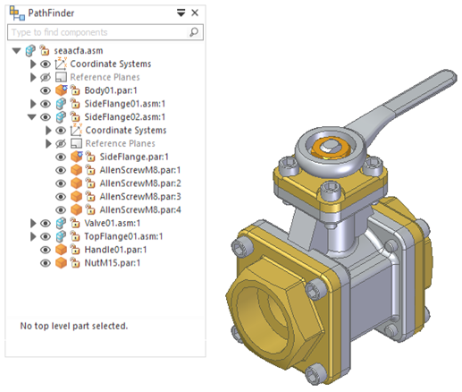
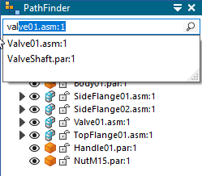
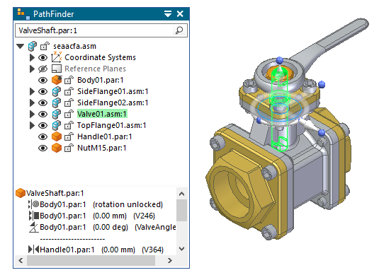

Find a part in an assembly
Find a part using Component Finder
Use Component Finder to quickly locate components in the assembly structure.
-
In the Component Finder box located at the top of Assembly PathFinder, begin typing the name of a part or sheet metal component or subassembly that you want to find.

Automatic completion of the search text finds all available matches in the document, and displays them in a list.

-
Click a part of component in the search list.
It is located and highlighted in PathFinder and in the graphics window.

Find a part using Select Tools
-
On PathFinder, click the Select Tools tab.
-
On the Select Tools tab, click the New Query button
 .
. -
In the Query dialog box:
-
Set the options that define the search criteria you want to use.
-
Click the Add To list button.
-
Click OK.
The system adds an entry to the Select Tools tab that meets your search criteria.
-
-
To select the parts that meet the query criteria, double-click the query entry in the Select Tools tab.
The parts you selected are highlighted in the graphics window.
You can:
-
Define queries in an assembly document that is used as a template.
-
Copy a query from one document and paste it into another document using the commands on the shortcut menu.
-
Use the Query dialog box to specify whether you want to search subassemblies.
-
Use the Quick Query option on the Select Tools tab to find and select parts in an assembly. Quick queries are not stored on the Select Tools tab.
-
Use the commands on the shortcut menu to edit, delete, and rename a query entry in PathFinder.
How do I
Select a part with PathFinderUse multi-select within Assembly PathFinder
Activate parts in an assembly
Inactivate parts in an assembly
Display All Profile Elements
Change an assembly component in the Assembly environment
Find a part in an assembly using a quick query
Scroll to a part
Collapse an assembly in PathFinder
Show and hide components in an assembly
Reorder parts in an assembly
Display or update the status information for documents
Unload Hidden Parts from Memory
Expand an assembly in PathFinder
Hide all the reference planes in an assembly
Hide the unselected parts in an assembly
Hide unselected profile elements
Learn more
PathFinder in assembliesLook up more details
PathFinder tab (Assembly environment)Toggle the display status of assembly components